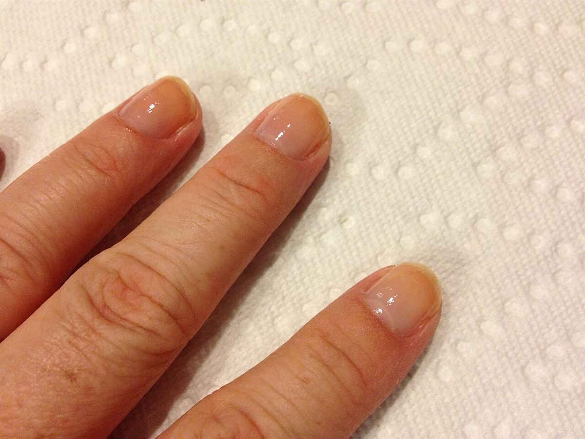
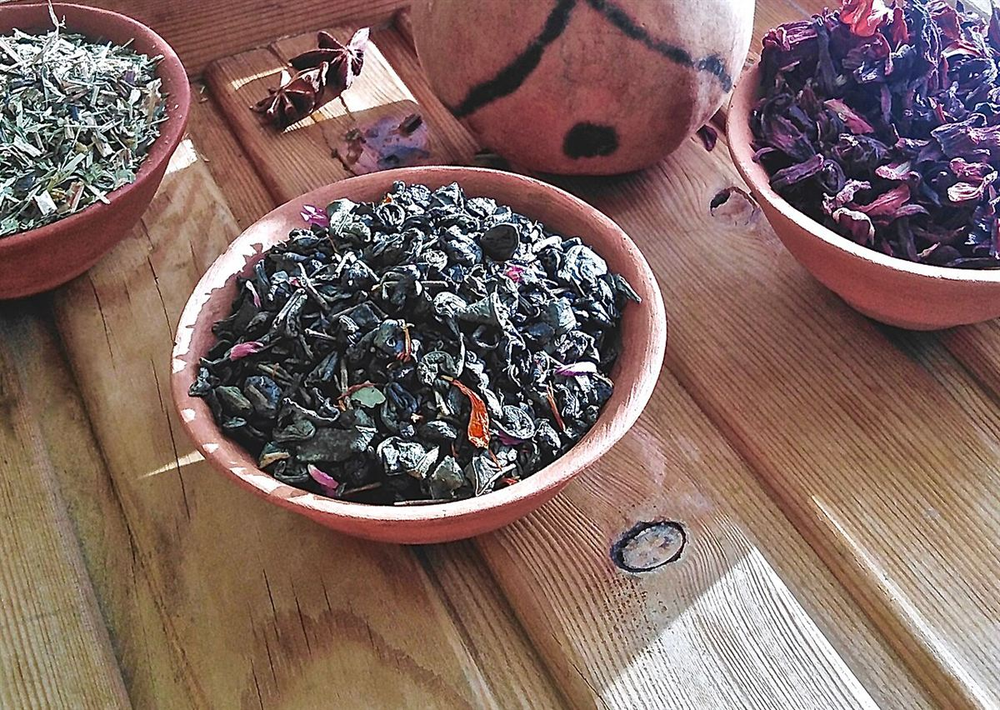
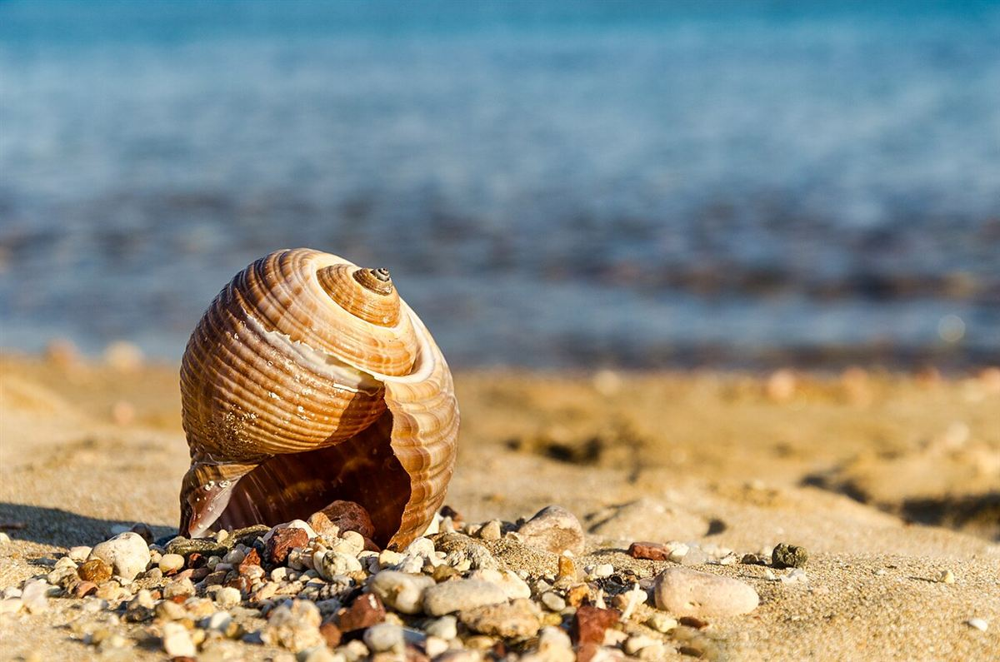

メニュー
現在、メニューの内容を準備しています。

準備中です
メニュー内容・料金は準備中です(お問い合わせください)。
メニューや料金を知りたいときは
- 電話で確認する:080-1147-7531
- Instagramで確認する:Instagramでも情報をご覧いただけます。



掲載写真はフリー素材のイメージであり、店舗の実際の写真ではありません。日本国外や撮影地が不明なものを含みます。
現在、メニューの内容を準備しています。

メニュー内容・料金は準備中です(お問い合わせください)。


掲載写真はフリー素材のイメージであり、店舗の実際の写真ではありません。日本国外や撮影地が不明なものを含みます。